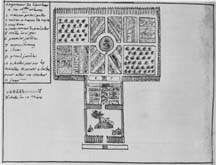

A virtual exhibit based on selections from Buisseret, David. Mapping the French Empire in North America: An Interpretive Guide to the Exhibition Mounted at the Newberry Library on the Occasion of the 17th Annual Conference of the French Colonial Historical Society (Chicago: The Newberry Library, 1991).
This final section shows the French settlements around the mouth of the Mississippi River, as they developed in the early eighteenth century. The section begins with a plan of the emergent town of Port-au-Prince, to remind us that the French had been in the Caribbean since the middle of the seventeenth century, and that it provided a base for the establishment of the French presence in the lower Mississippi valley.The French settlements here tended to be on a larger scale than in the Illinois Country, and they eventually extended for many miles along the Mississippi River, where indeed the longlot pattern is very conspicuous today, especially from the air. John Law gave an early impetus to the settlement, but after the collapse of his schemes the colonists survived, and succeeded in establishing at New Orleans a city of considerable beauty.The French-speaking inhabitants of the lower Mississippi valley eventually built up a culture strong enough to resist Anglicization at the time of the U.S. takeover, with the result that French ways have survived there long after they have almost disappeared from the Illinois Country.
It was during the first decade of the seventeenth century that the French began their northern drive into the New World, down the Saint Lawrence valley. About two decades later, they began establishing themselves in the West Indies, at first on Saint Kitts and then on Hispaniola and on such islands of the Lesser Antilles as Martinique and Guadeloupe. The French colony on Hispaniola was exceptionally lawless, even for the seventeenth-century Caribbean, but the buccaneers who composed it gradually transformed themselves into planters, so that by the end of the century there were substantial estates producing indigo and cocoa. By the treaty of Ryswick (1697) the island was divided into French and Spanish sections (named respectively Saint-Domingue and Santo Domingo), and the French Crown played an increasingly important role there. It seems to have been after the visit of Champsmeslin in 1723 that Port-au-Prince was chosen as the site for a capital, a choice ratified and implemented in 1738. Our plan shows the future site of the capital about 1710, and has many notes about where the anchorages and their protecting forts might be. Already, too, there are two habitations, belonging to the sieur Fortin (top) and to the sieur Morel (bottom). The fields lie away to the right, out of the plan, but we can see that each plantation had its slave-quarters (tightly grouped small houses) and also its gardens (enclosed areas). During the eighteenth century Saint-Domingue would greatly flourish in economic terms, at incalculable human cost, and would often serve as the base for French penetration of the lower Mississippi River valley.
This remarkable map, which does not seem to have any close counterpart in the French archives, shows the lower Mississippi River during the first decade of French settlement there. The town of New Orleans, founded about five years earlier, lies on the very distinctive bend in the river (whose course is perfectly recognizable in comparison with modern maps), and each side of it are the new holdings, set out in the longlot style. Upon each holding we can see what looks like a careful delineation of the buildings, as well as the name of the landowner. Each of these could be analyzed, to build up a picture of the colony's structure at this moment. Down in the bottom left, for instance, are two lots marked "habitation des Allemands;" these must have been among the 300 Alsatians brought to Louisiana through John Law's arrangements in 1722. In between these two lots is one marked "Habitation a Monsieur Arensbourg;" he was a Swedish captain and their leader. Working downriver, we come to a holding extending right across the Mississippi River, and belonging to the "Sieur Sainton;" he was the son of a lawyer from Châtellerault, and was trying to establish himself here. Next to him is a squarish plot called the "Terrain au sieur Manadé." Pierre de Manadé was a surgeon who was adapting well to the new life; he raised cattle - perhaps on this very terrain - and had taken an Indian as his wife. This early French establishment has marked the area down to the present day, for satellite images of the Lower Mississippi sharply reveal the continuing pattern of the longlots.
References: Buisseret 1990 and Giraud.
The French had established themselves at Mobile in 1702, but had moved their settlement in 1710, coming to the site of the modern city. This plan shows the situation in about 1720, thus falling between plans of 1711, 1725 and 1731 preserved at the Archives Nationales in Paris. Fort Condé (formerly Fort Louis) lies in the center of a great fortified work, and the settlers' houses stretch away on each side of the fort, alongside the marshes bordering the Mobile River. Inside the fort are the barracks at "A," and the storehouse at "B;" the barracks are not quite finished, and neither is the great ditch which will one day surround the fort. In the town, the houses are shown as simple blocks, each in an area of garden, without any key to tell us who lived where. There is, however, an interesting elevation at the top of the plan, showing how the houses in the fort looked from the point "E" on the plan. This elevation does not correspond very satisfactorily with the plan, but it seems to be showing us a line of rather elegant two-story houses, with frequent doors and windows on the ground floor, mansard roofs and dormer windows.Between 1711 and 1720 Mobile was the capital of French Louisiana, but after that time it was eclipsed by New Orleans, ideally situated to take advantage of the growing trade on the Mississippi River. Mobile continued to prosper as the center of the Indian trade down to the time of the Treaty of Paris in 1763.
References: Giraud and Hamilton.
Dumont de Montigny came to Louisiana in 1719, and was employed as an engineer at Natchez and at New Orleans. He returned to France in 1738, and there published his Mémoires Historiques sur la Louisiane (2 vols., Paris 1753); these little volumes contain much information about the Indians of the area, and have plans of both Natchez and New Orleans. The Newberry possesses the original manuscript memoir out of which the Mémoires were apparently composed, and this contains the little plan shown here. This plan delineates the "logement de l'autheur a la Nouvelle Orléans," and probably shows a fairly typical French establishment at New Orleans of the 1730s. At the bottom of the image is a flight of steps, which probably led down to the river, for, as we shall see, most French holdings had a frontage on the Mississippi River. These steps lead into a palisaded enclosure, in which is the main house ("1"), the kitchen and Negro quarters ("2" and "11"), and a "pavilion" ("3"). Behind the main house is a curious feature: the "ladder up which the poultry go to sleep in the tree" ("10"). Passing through the other gap in the palisade, we come to a small garden with a trellis ("5"), flowerbeds and two ponds ("7" and "8"). This in turn leads into the main garden ("9"), which seems to have a variety of orchards and vegetable-beds. We have to remember that at this time the French had only been settled in this area for a couple of decades, and settlers like Montigny were perhaps experimenting with different kinds of trees and plants, to see what would grow best in the hot and humid delta.
References: Giraud and Smith.
Work on the site of New Orleans began in 1718, but did not become serious until 1722, when the fledgling town became the capital of French Louisiana. Our plan, which is one in a numerous series of plans preserved in Paris at the Archives Nationales and the Bibliothèque Nationale, shows the town at the end of 1722. As the legend at the top says, we have here an account of the present state of houses built, and in yellow an outline of what remains to be done to the fortifications. The key takes us around the public buildings, many of which still stand in much the same position in modern New Orleans. The main buildings are grouped round the "place d'armes," with the directors' houses facing the river (here still called the "Fleuve St. Louis"). The main storehouse is at "H," and is not quite finished; the hospital and arsenal are away to the east, by the river. The barracks for the Swiss, German and French workers ("M," "N," and "O") are on an internal street, now Royal Street. The successive town-plans for New Orleans, which continued to grow throughout the eighteenth century, allow us to see precisely how its expansion took place. In the central area, the present street-pattern conforms exactly to the layout of the early eighteenth century, while in the suburbs the streets follow the lines dictated by the estate-boundaries of the longlot system.
References: Cumming 1974, McDermott 1969, Naissance and Wilson
The French judged in the early eighteenth century that they needed a fort in the vicinity of the Natchez Indians, about two hundred miles north of New Orleans, and so in 1716 they built Fort Rosalie there. Named after the wife of the Comte de Pontchartrain, Ministre de la Marine between 1699 and 1715, this was a fairly crude little palisaded fort, around which a French settlement soon developed. There were eventually more than one thousand farmers growing tobacco, wheat and other crops, but they were almost all forced to flee after a great uprising by the Natchez Indians in 1729. Dumont de Montigny's little sketch shows the area just before this event. Fort Rosalie is in the center, on its bluff above the Mississippi River ("Fleuve St. Louis"), and then in the background, among the rolling countryside, are the various farms. Dumont shows considerable cultivated areas around them, as well as a "village sauvage;" this was apparently the Natchez Indian center, the "grand village" now preserved as a mound site in Natchez. This village has at its center a circular palisade; most of the French famrs are simply set in the open country, though a group of buildings at the top right is enclosed by a square palisade. It may be that Europeans tended to build square palisades, and Indian peoples to construct round ones. In general, the open and dispersed nature of the French farms around Natchez must have made them particularly vulnerable to attacks like the one of 1729.
References: Galloway, James, Mémoire.